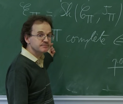

Laurent Lafforgue | |
|---|---|
 | |
| Born | 6 November 1966 |
| Alma mater | École Normale Supérieure Paris-Saclay University |
| Known for | Proof of Langlands conjectures |
| Awards | Clay Research Award (2000) Fields Medal (2002) |
| Scientific career | |
| Fields | Mathematics |
| Institutions | CNRS |
| Thesis | D-stukas de Drinfeld (1994) |
| Gérard Laumon | |
Laurent Lafforgue (French: [lafɔʁɡ]; born 6 November 1966) is a French mathematician. He has made outstanding contributions to Langlands' program in the fields of number theory and analysis,[1] and in particular proved the Langlands conjectures for the automorphism group of a function field. The crucial contribution by Lafforgue to solve this question is the construction of compactifications of certain moduli stacks of shtukas. The proof was the result of more than six years of concentrated efforts.[2]
In 2002 at the 24th International Congress of Mathematicians in Beijing, China, he received the Fields Medal together with Vladimir Voevodsky.[3]
Laurent Lafforgue has two brothers, Thomas and Vincent, both mathematicians. Thomas is now a teacher in a classe préparatoire aux grandes écoles at Lycée Louis le Grand in Paris and Vincent a CNRS directeur de recherches at the Institut Fourier in Grenoble.
He won 2 silver medals at International Mathematical Olympiad (IMO) in 1984 and 1985. He entered the École Normale Supérieure in 1986. In 1994 he received his Ph.D. under the direction of Gérard Laumon in the Arithmetic and Algebraic Geometry team at the Université de Paris-Sud. Currently he is a research director of CNRS. He was detached as permanent professor of mathematics at the Institut des Hautes Études Scientifiques (IHÉS) in Bures-sur-Yvette, France, in 2000–2021. In 2021, he left his IHÉS position and moved to Huawei.[4] His goal there is to apply topos theory to the area of artificial intelligence.[5]
He received the Clay Research Award in 2000, and the Grand Prix Jacques Herbrand of the French Academy of Sciences in 2001 and was awarded the Fields Medal in 2002. His younger brother Vincent Lafforgue is also a notable mathematician. On 22 May 2011 Lafforgue was awarded an honorary Doctor of Science from the University of Notre Dame.[6]
Lafforgue is a critic of what he calls the "pedagogically correct" in France's educational system. In 2005, he was forced to resign from the Haut conseil de l'éducation after he expressed these views in a private letter that he sent to Bruno Racine, president of the HCE, that later was made public.[7]
Laurent is a devout Catholic and never married.[8] He opposed same-sex marriage in France, and supported the "Les Veilleurs” movement.[9]
In 2024, he declared that he was “full of admiration for Huawei”, which would supposedly be suffering a campaign of criticism from the USA.[10]
Expository articles
Research articles
{kind=link}